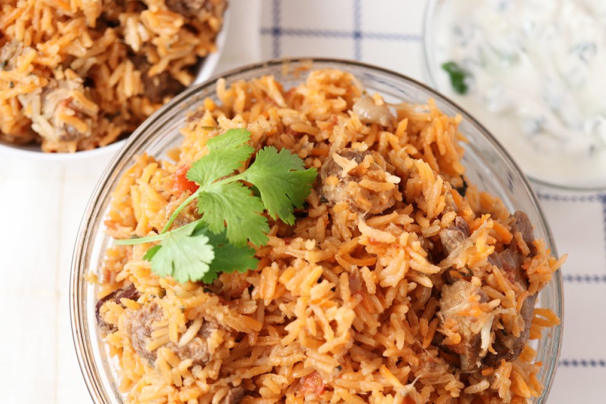
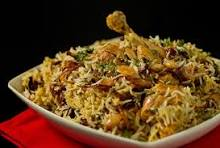
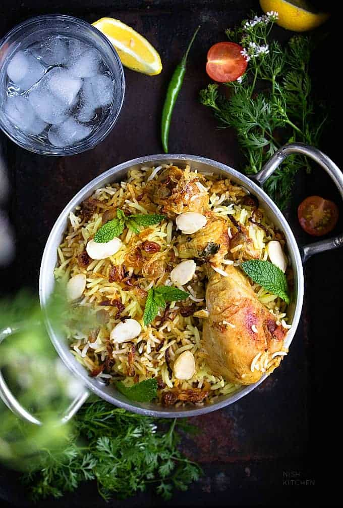

Recipe and Preparation
Biryani is classic Indian dish. Lamb, spices and rice are layered and cooked together. The layers gently steam and come together to make a special occasion dish.
Serves 8
- 2 1/2 pounds lamb, lamb shoulder or boneless lamb (cut into 3 inch pieces)
- 3/4 cup neutral oil
- 2 1 inch pieces of cinnamon
- 6 cardamom pods
- 6 cloves
- 3-4 medium onions (very thinly sliced)
- 3 inch piece of ginger (minced)
- 6 cloves garlic (minced)
- 2/3 cup thick yogurt
- 3 tablespoons coconut powder
- 1 lemon, juiced
- pinch saffron
Parboiling the Rice
- 2 cups Basmati rice (rinsed)
- 2 teaspoons salt
- 2-3 quarts water
Kachaa Green Masala
- 2 green chilis - slit vertically
- 1/2 cup fresh mint (chopped)
- 1 cup cilantro (chopped)
- 3 medium tomatoes (chopped)
- 1/2 teaspoon chili powder
- 3 teaspoons salt

Preparation
- In a dutch oven or large stainless steel pot, heat oil over medium heat. Add the cardamon, cinnamon and cloves and saute for a minute. Add the onions and saute until soft. Give this a good 10 to 15 minutes. You want them to be soft and almost caramelized. Add the garlic and ginger paste, saute about 5 minutes. The onions and garlic will be golden and stick to the pan, and almost seem like its going to burn but this is ok.
- Add all the katchaa green masala ingredients along with the lamb. Cook uncovered, stirring constantly until tomatoes are soft and mushy. Lower heat to med/low and simmer, occasionally stirring for 20 minutes. The lamb and tomatoes will release a good amount of liquid so you shouldn’t need to add any. But check occasionally and add 1/4 cup water if needed. You want the khurma to simmer and bubble gently.
- Add the yogurt and cook for 20 minutes again at medium/low heat. Add the coconut powder and simmer for 20 to 30 minutes. You can check that the meat is soft and tender.
- Meanwhile, parboil the rice. In another large pot, bring 3 quarts of water to a boil with 2 teaspoons salt. Rinse basmati rice and add to the boiling water. Cook rice for 4 minutes. Drain in a colander.
- In a small bowl, mix the lemon jucie and saffron.
- Now add the basmatii rice to the simmering khurma in layers. Layer the rice gently over the khurma. No need to mix. Add the saffron lemon mixture and sprinkle over the rice.
- Simmer over low heat. You can always peak and make sure there is a little bit of steam coming up into the rice, the classic “dum” part. Simmer for 12 to 15 minutes until rice is cooked. About 10 minutes in you can give the rice a few stirs. When its done give it a few stirs to help distribute the lamb and spices. It doesn’t have to be all even.
- Serve with yogurt chutney or tomato chutney, or the best way - all by itself.

